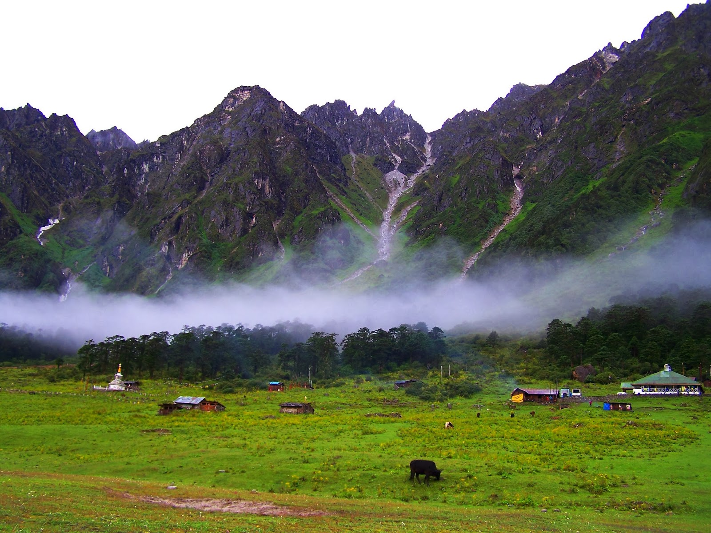
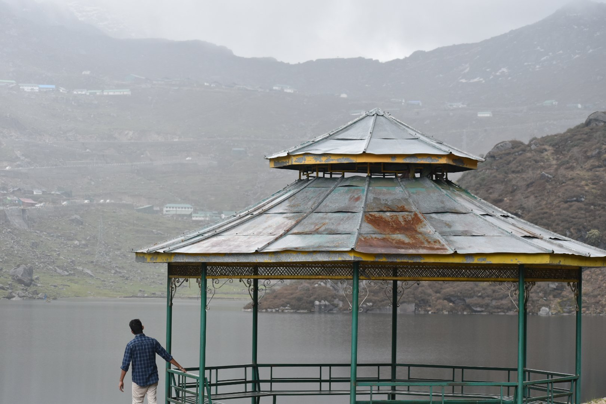

Experience the breathtaking beauty of the Valley of Flowers
Yumthang Valley, located in North Sikkim, India, is renowned for its stunning natural beauty and vibrant flora. Also known as the "Valley of Flowers," it boasts picturesque landscapes, lush green meadows, and a variety of alpine flowers that bloom during the spring season.
Visitors to Yumthang Valley can indulge in a range of activities, including trekking, photography, and picnicking amidst the scenic surroundings. The valley is also home to hot springs, where visitors can relax and rejuvenate while enjoying the tranquil ambiance.
Efforts have been made to preserve the ecological balance and natural beauty of Yumthang Valley. Conservation initiatives focus on sustainable tourism practices, waste management, and protection of the fragile ecosystem to ensure the long-term viability of this pristine destination.
Yumthang Valley attracts nature lovers, adventure enthusiasts, and photographers from around the world with its unparalleled beauty and tranquility. Visitors can explore the valley's diverse flora and fauna, capture breathtaking views, and immerse themselves in the serenity of nature.